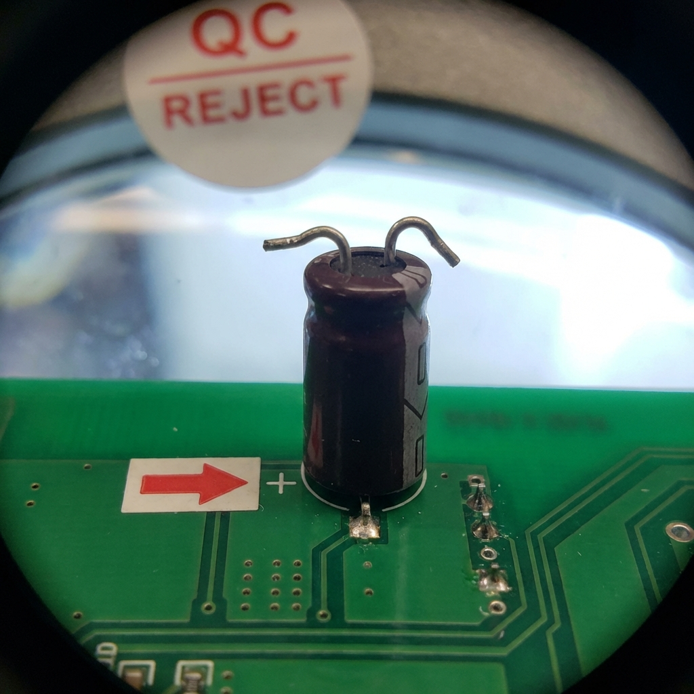
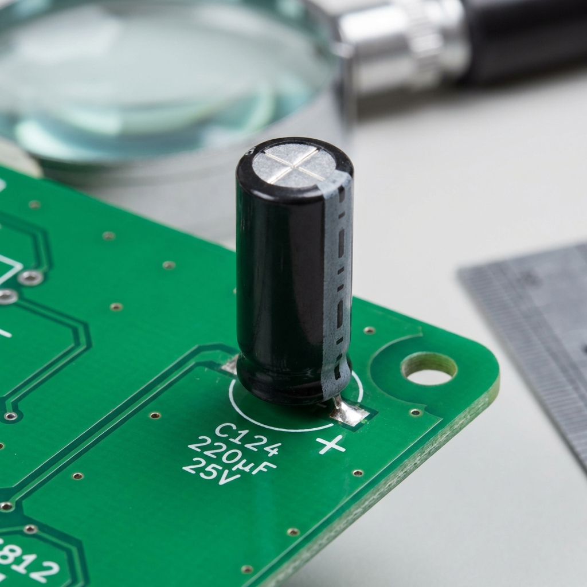

Les Outils de la Réaction à Chaud
Le QRQC n'est pas qu'une méthode, c'est une attitude :
Pour caractériser le problème sans ambiguïté :
La règle d'or du QRQC : Quitter la salle de réunion !

❌ Composant monté à l'envers

✅ Montage correct
Le détrompeur mécanique est cassé !
Si vous ne faites pas le Genba, vous ne le verrez jamais.
"J'ai vu ça mille fois, je sais ce que c'est..."
C'est l'ennemi du QRQC !
Dans ce scénario, si vous ne vérifiez pas physiquement la machine (Genba), vous ne verrez pas la cause racine évidente.